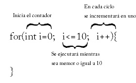

Curso de Java
Desde cero hasta conexiones con bases de datos MySQL
Curso de Java: Contenido
Iniciación: página 29
[ 26, 27, 28, 29, 30, 1, 2 ]
Iniciación al lenguaje Java
Estructuras de control
El bloque for
El bloque for sirve para hacer ciclos controlados por un contador. La sintaxis que exige en sus parámetros es más compleja que las anteriores:
| Parámetro | Utilidad |
| Primero | Inicializa el contador y debe ser un entero |
| Segundo | Establece mediante un operador boléano (> , <, <=, etc) el límite final del contador |
| Tercero | Establece el ritmo de incremento |

La expresión de i++ significa que al valor de i debe agregársele 1. ++ es el operador de incremento; también existe el de decremento (--) que resta en uno al valor que modifica.
Para ver cómo funciona el bucle for hagamos un ejemplo combinado con un try…catch que nos muestre la tabla de multiplicar solicitada:
import javax.swing.JOptionPane;
public class DemoFor {
String mensaje;
public DemoFor() {
String valorCadena=JOptionPane.showInputDialog(null,"Qué tabla de multiplicar que desea");
try{
int valorEntero=Integer.parseInt(valorCadena);//Si esto falla, entra al catch
mensaje= "Tabla del "+valorCadena+"\n";// \n agrega un fin de línea a las cadenas
for(int i=1;i<=10;i++){
/*La siguiente línea se repetirá diez veces y concatenará
*cadenas del tipo “5x4=20” a la cabecera puesta antes del bucle
*/
mensaje=mensaje+i+"x"+valorCadena+"="+(i*valorEntero)+"\n";
}
}catch(NumberFormatException ex){
mensaje="No es un entero";
}
JOptionPane.showMessageDialog(null,mensaje);
}
public static void main(String[] args) {
new DemoFor();
}
}
Este programa muestra la tabla de multiplicar solicitada en un cuadro de diálogo, a menos que el usuario no haya escrito un número, ante lo cual mostrará el mensaje “No es un entero”